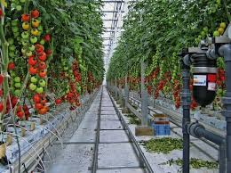
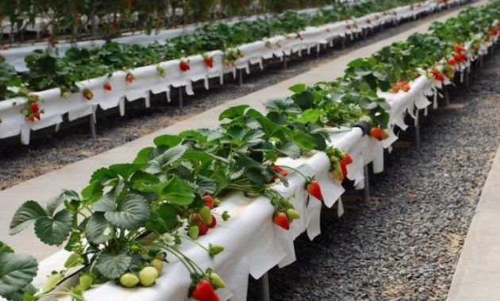

Tanaman hidroponik ini tidak kalah sehat dan bergizi, apalagi teknik ini mengutamakan terpenuhinya kebutuhan nutrisi tumbuhan. Apabila kamu ingin menanam tanaman hidroponik di rumah, maka tentukan terlebih dahulu mengetahui jenis tanaman hidroponik. Pasalnya tidak semua tanaman bisa ditanam menggunakan teknik hidroponik. Jenis tanaman hidroponik akan menghasilkan jenis tanaman yang bebas dari hama dan penyakit. Berikut jenis tanaman hidroponik
Sawi termasuk tanaman yang tahan terhadap hujan sehingga bisa tumbuh sepanjang tahun. Sayuran satu ini juga dapat ditanam dimanapun. Tanaman ini sangat laku di pasaran sehingga para petani banyak yang menggunakan teknik hidroponik untuk membudidayakannya. Jenis tanaman hidroponik ini sangat cocok dan bisa kamu coba tanam di rumah.

Jenis tanaman hidroponik ini mirip dengan kol. Brokoli menyimpan banyak nurtrisi yang diperlukan tubuh. Jenis tanaman hidroponik ini biasanya tumbuh di dataran tinggi. Namun, sekarang brokoli dapat ditanam di dataran rendah menggunakan teknik hidroponik.


Untuk menanam tomat menggunakan teknik ini harus diperhatikan dari pemilihan bibitnya. Bibit unggul yang kamu beli untuk tomat akan lebih menguntungkan pada hasil panen nantinya. Penyemaian bibit tomat sebaiknya menggunakan media seperti serbuk sabut kelapa. Setelah itu, kamu harus melakukan perawatan rutin hingga satu bulan dan siap ditanam dengan teknik hidroponik.
Strawberry termasuk jenis tanaman hidroponik buah yang bisa ditanam tanpa menggunakan tanah. Sudah banyak petani-petani Indonesia yang beralih dari sistem bercocok tanam konvesional ke sistem hidroponik dengan sistem tetes yang lebih mudah dan praktis perawatannya
Copyright@2019 - We Plants